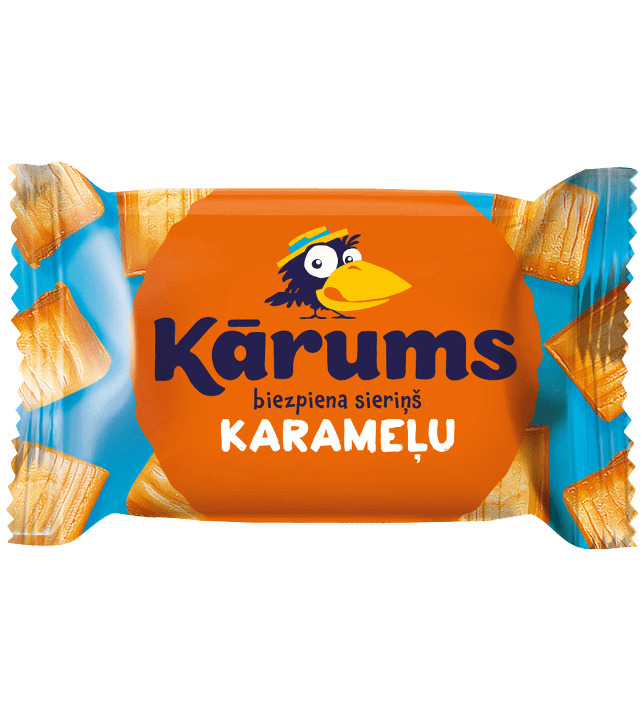

|
Kārums! Paši labākie piena produkti Latvijā! |
|  | ||
| Šokolādes biezspiena sieriņš | Klasiskais biezspiena sieriņš | Karameļu biezspiena sieriņš |
“Kārums” sieriņu pirmsākumi meklējami 1940. gadu beigās, kad Rīgā, Valmieras ielā 2, sāka ražot pirmos glazētos biezpiena sieriņus. Sākotnēji sieriņu ražošana bija roku darbs, bet 1955. gadā tiek uzsākta pāreja uz mehanizētu biezpiena sieriņu ražošanu, kas noslēdzas vien septiņdesmitajos gados. 1993. gadā turpat Valmieras ielā tiek nodibināts „Rīgas Piensaimnieks”. Tam seko vēsturisks pavērsiens 1994. gadā - tas ir tautā mīlētākā biezpiena sieriņa „Kārums” un tā iepakojumu rotājošās vārniņas dzimšanas gads. Savukārt 2020. gads "Kārums" vēstures lapās ienes nākamo svarīgo pagrieziena punktu - SIA "Rīgas Piensaimnieks" pievienojas AS "Rīgas piena kombināts", tiek atklāta jauna, moderna ražotne Rīgā, Bauskas ielā 180, un zīmols atdzimst atjauninātā izskatā, kā arī - uz iepakojumiem atgriežas vārna. |
| "Kārums" vienmēr bijis iecienīts gan tautas, gan pārtikas nozares ekspertu vidū, par ko liecina gan augsts novērtējums mīlētāko zīmolu topos, gan balvas "Riga Food" izstādēs. "Kārums" biezpiena sieriņi ir arī mūsu garšīgais vēstnesis plašajā pasaulē, kas tiek eksportēts uz daudzām pasaules valstīm. |
0% skumjas / 100% prieka